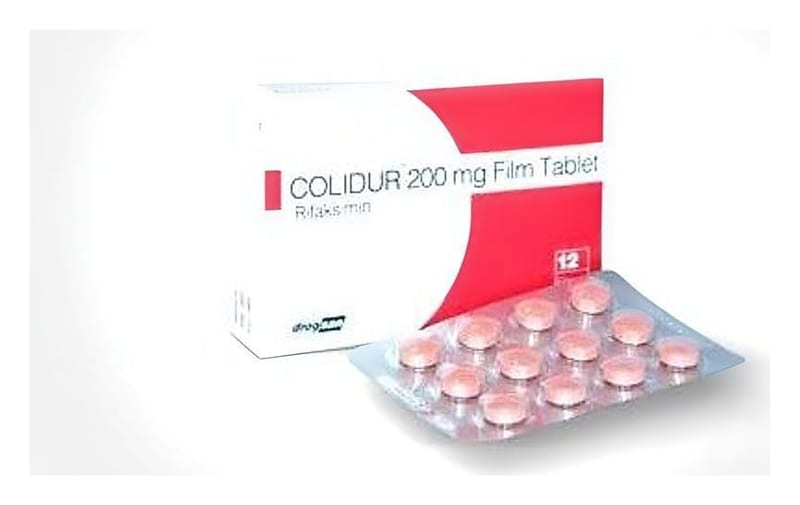

Colidur Fort 550 mg Film Kaplı Tablet, 42 Adet

Ne için kullanılır
KT · Bölüm 1COLİDUR FORT, 42 adet pembe renkli, oval film kaplı tablet içeren blister ambalajda sunulmaktadır. COLİDUR FORT her bir film kaplı tablette, 550 mg rifaksimin içerir. COLİDUR FORT etken madde olarak rifaksimin içerir. COLİDUR FORT, bağırsağa yerleşen ve hepatik ensefalopati hastalığına neden olan bakterileri ortadan kaldıran bir antibiyotiktir. Hepatik ensefalopati ani veya kronik karaciğer yetmezliklerinde karaciğerin temizleyemediği zararlı maddelerin kan yoluyla beyine taşınıp ruhsal gerilim, saldırganlık, bilinç bulanıklığı, kas problemleri, konuşmada zorluk ve koma gibi bozukluklara neden olmasıdır. COLİDUR FORT, karaciğer hastalığı olan yetişkinlerde belirgin hepatik ensefalopati ataklarının tekrarını azaltmak için kullanılır. İshal ağırlıklı karın ağrısı, şişliği ve bağırsak düzeninde değişikliklerle tanımlanan kronik mide-bağırsak bozukluklarının tedavisinde kullanılır. COLİDUR FORT tek başına ya da daha yaygın olarak laktuloz içeren bağırsak yumuşatıcı bir ilaçla birlikte kullanılabilir.